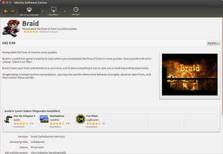

Software-Center
|  |
| Software-Center |
Ein Übersichtsartikel zur Vertriebsplattform ist unter Software-Center zu finden.

Seiten in der Kategorie „Software-Center“:
Seiten mit Tag „Software-Center“¶
- Codecs
- ONEPLAY DVD Player
- Spiele/Baphomets Fluch
- Spiele/BIT.TRIP BEAT
- Spiele/BIT.TRIP RUNNER
- Spiele/Braid
- Spiele/Brukkon
- Spiele/Crayon Physics Deluxe
- Spiele/Darwinia
- Spiele/Defcon
- Spiele/EDGE
- Spiele/Family Farm
- Spiele/Fieldrunners
- Spiele/Fortix 2
- Spiele/Goodfolks
- Spiele/LGP
- Spiele/Limbo
- Spiele/Machinarium
- Spiele/Majesty Gold
- Spiele/Multiwinia
- Spiele/Oil Rush
- Spiele/Potatoman Seeks the Troof
- Spiele/Psychonauts
- Spiele/Puzzle Moppet
- Spiele/Rochard
- Spiele/SACRED Gold
- Spiele/Shank 2
- Spiele/Shatter
- Spiele/SpaceChem
- Spiele/Spirits
- Spiele/Steel Storm
- Spiele/Super Meat Boy
- Spiele/The Journey Down
- Spiele/TRAUMA
- Spiele/Uplink
- Spiele/Waking Mars
- Spiele/Wizorb
- Spiele/World of Goo
- Steam
- SteamCMD
- Ubuntu Software
- Erstellt mit Inyoka
-
 2004 – 2017 ubuntuusers.de • Einige Rechte vorbehalten
2004 – 2017 ubuntuusers.de • Einige Rechte vorbehalten
Lizenz • Kontakt • Datenschutz • Impressum • Serverstatus -
Serverhousing gespendet von